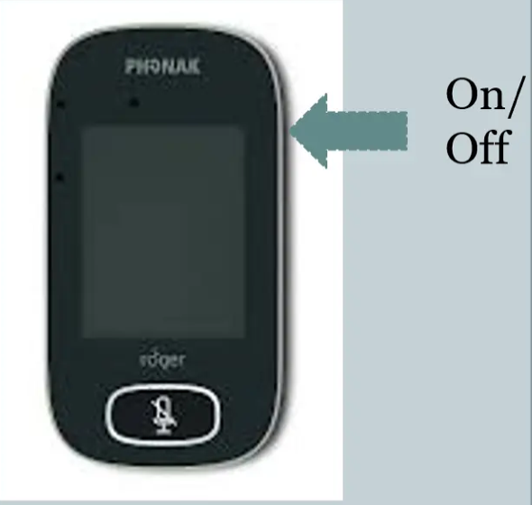
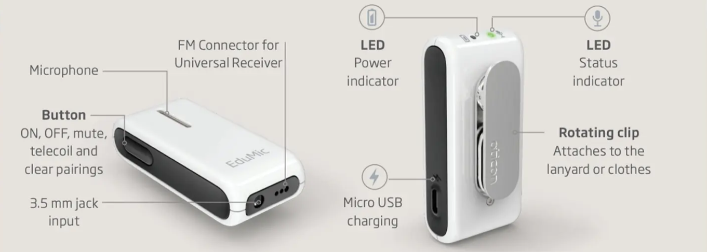
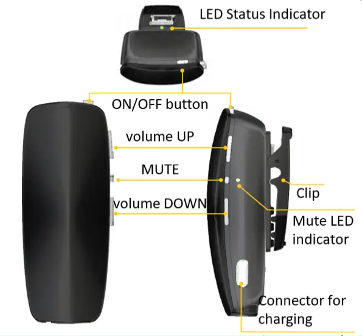

MuteHold On/Off on the side until the screen turns on. Tap Connect to check the link.
Tap the button under the screen. Tap again to unmute.
Never tap NewNet. It disconnects every student.

Hold the button 2 s until both lights are white. Let go. Wait ~10 s for green.
Briefly press the button (status flashes green). Press again to unmute.
| Green | On, sending your voice |
| Flashing green | Muted |
| Flashing blue | Pairing |
| Yellow / Magenta | Wrong mode: call DHH |
| Red | Pairings cleared: call DHH |
| Power flashing red | Low battery: charge |
Don't hold the button 12 s. It clears all pairings.

Hold ON/OFF (top) ~1.5 s until green. Let go: blinking green = on. Student starts streaming (program 1, or hold processor button ~3 s).
Press MUTE on the side; Mute LED lights. Press again to unmute. Volume UP/DOWN are on the same side.
| Blinking green | On and ready |
| Flashing yellow | Under 30 min battery (or pairing) |
| Red on charger | Charging |
Pairing (pen tip in pairing button, 20 s window) is done by DHH staff.
Still not working? Stop and call. Don't change settings on the student's own device beyond switching programs. Steps from Phonak, Oticon and Cochlear user guides; program 1 per district DHH in-service. Follow the student's plan if it differs.